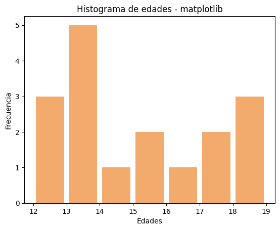
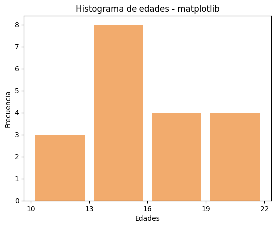
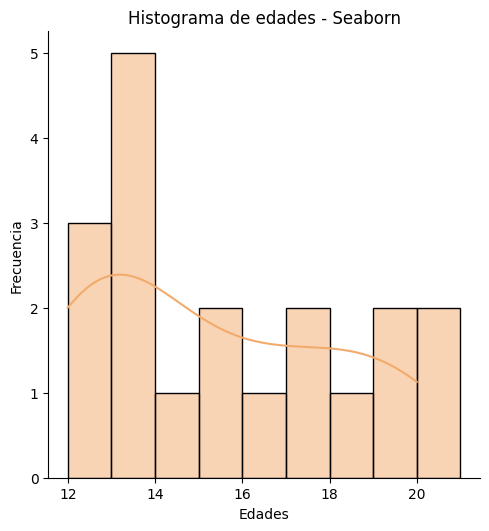
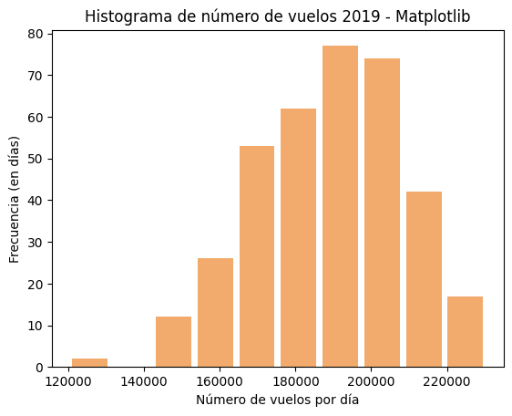
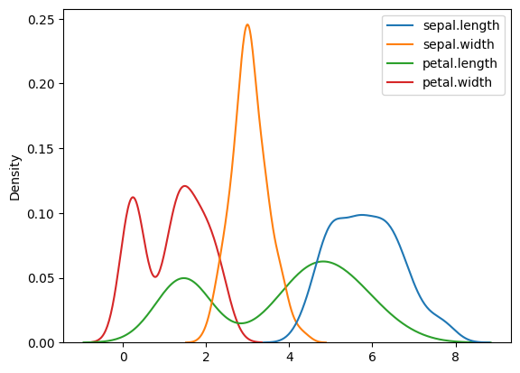

Histograma con Matplotlib#
Matplotlib es una de las principales y más conocidas librerías de visualización y generación de gráficos para Python
Pasos para crear un histograma con Matplotlib
Añadir un título con la función title
Añadir etiquetas en los ejes con las funciones xlabel e ylabel.
Cambiar el número de divisiones en el eje X con la función xticks.
Cambiar el color de las barras con el parámetro color de la función hist.
Cambiar el ancho de las barras con el parámetro rwidth de la función hist.
import matplotlib.pyplot as plot
edades = [12, 15, 13, 12, 18, 20, 19, 20, 13, 12, 13, 17, 15, 16, 13, 14, 13, 17, 19]
intervalos = range(min(edades), max(edades)) #calculamos los extremos de los intervalos
plot.hist(x=edades, bins=intervalos, color='#F2AB6D', rwidth=0.85)
plot.title('Histograma de edades - matplotlib')
plot.xlabel('Edades')
plot.ylabel('Frecuencia')
plot.xticks(intervalos)
plot.show() #dibujamos el histograma

Le damos otra frecuencia#
import matplotlib.pyplot as plot
edades = [12, 15, 13, 12, 18, 20, 19, 20, 13, 12, 13, 17, 15, 16, 13, 14, 13, 17, 19]
intervalos = [10, 13, 16, 19, 22] #indicamos los extremos de los intervalos
plot.hist(x=edades, bins=intervalos, color='#F2AB6D', rwidth=0.85,)
plot.title('Histograma de edades - matplotlib')
plot.xlabel('Edades')
plot.ylabel('Frecuencia')
plot.xticks(intervalos)
plot.show() #dibujamos el histograma

import matplotlib.pyplot as plot
import seaborn as sb
edades = [12, 15, 13, 12, 18, 20, 19, 20, 13, 12, 13, 17, 15, 16, 13, 14, 13, 17, 19]
intervalos = range(min(edades), max(edades) + 2)
sb.displot(edades, color='#F2AB6D', bins=intervalos, kde=True) #creamos el gráfico en Seaborn
#configuramos en Matplotlib
plot.ylabel('Frecuencia')
plot.xlabel('Edades')
plot.title('Histograma de edades - Seaborn')
plot.show()

Cargando una base de datos de vuelos por año#
import csv # importamos csv para poder leer el fichero de entrada
import matplotlib.pyplot as plot
import pandas as pd
# leemos el fichero de datos
nombre_fichero = '/content/numero-de-vuelos-por-dia-2019 (1).csv'
Base_Datos = pd.read_csv(nombre_fichero, sep=';')
Base_Datos.head()
| Fecha | Vuelos | |
|---|---|---|
| 0 | 2019-01-01 | 128717 |
| 1 | 2019-01-02 | 162303 |
| 2 | 2019-01-03 | 169310 |
| 3 | 2019-01-04 | 173386 |
| 4 | 2019-01-05 | 161288 |
# creamos el histograma
plot.hist(x=Base_Datos["Vuelos"], color='#F2AB6D', rwidth=0.85)
# configuramos
plot.xlabel('Número de vuelos por día')
plot.ylabel('Frecuencia (en días)')
plot.title('Histograma de número de vuelos 2019 - Matplotlib')
# dibujamos
plot.show()

Grafico de densidad de iris#
iris=pd.read_csv("/content/iris.csv")
iris
| sepal.length | sepal.width | petal.length | petal.width | variety | |
|---|---|---|---|---|---|
| 0 | 5.1 | 3.5 | 1.4 | 0.2 | Setosa |
| 1 | 4.9 | 3.0 | 1.4 | 0.2 | Setosa |
| 2 | 4.7 | 3.2 | 1.3 | 0.2 | Setosa |
| 3 | 4.6 | 3.1 | 1.5 | 0.2 | Setosa |
| 4 | 5.0 | 3.6 | 1.4 | 0.2 | Setosa |
| ... | ... | ... | ... | ... | ... |
| 145 | 6.7 | 3.0 | 5.2 | 2.3 | Virginica |
| 146 | 6.3 | 2.5 | 5.0 | 1.9 | Virginica |
| 147 | 6.5 | 3.0 | 5.2 | 2.0 | Virginica |
| 148 | 6.2 | 3.4 | 5.4 | 2.3 | Virginica |
| 149 | 5.9 | 3.0 | 5.1 | 1.8 | Virginica |
150 rows × 5 columns
import seaborn as sns
# Crear gráfico de densidad
sns.kdeplot(iris)
# Mostrar el gráfico
<Axes: ylabel='Density'>
